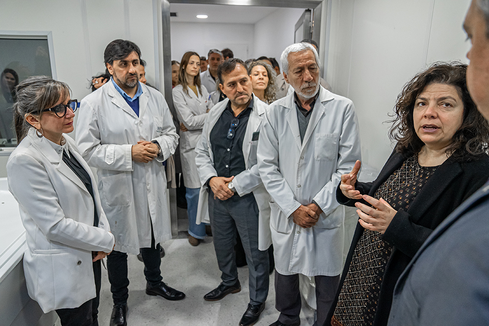

Autonomía digital y comunicación
Personas que presentan dificultades para utilizar interfaces tradicionales.
- Acceso a dispositivos mediante BCI y sensores.
- Control gradual y entrenable.
- Integración con sistemas de comunicación aumentativa.
Objetivo: reducir barreras digitales y explorar nuevas vías de autonomía.

Monitoreo cognitivo y fisiológico
Personas que requieren seguimiento de funciones cognitivas, alertas y vitales.
- Evaluaciones breves de atención y memoria.
- Análisis fisiológico para detectar cambios relevantes.
- Complemento a procesos médicos y de rehabilitación.
Objetivo: apoyar decisiones profesionales sin reemplazarlas.

Aprendizaje y rendimiento cognitivo
Usuarios interesados en mejorar atención, memoria y hábitos de estudio.
- Medición de carga cognitiva durante estudio.
- Entrenamientos breves de atención.
- Datos agregados para docentes.
Objetivo: enriquecer procesos de aprendizaje con información cognitiva.

Soporte a decisiones clínicas
Instituciones que trabajan con pacientes en rehabilitación física o cognitiva.
- Monitoreo ligero de signos vitales.
- Evaluación cognitiva complementaria.
- Exploración de IA para análisis de imágenes.
Objetivo: mejorar seguimiento sin reemplazar criterio clínico.
Investigación en neurotecnología e IA
Equipos académicos interesados en investigación aplicada.
- Plataformas experimentales.
- Diseño de estudios.
- Análisis de neurodatos.
Objetivo: construir evidencia sólida de uso responsable de IA.
Bienestar y toma de decisiones
Organizaciones que buscan integrar datos cognitivo-fisiológicos.
- Indicadores de estrés y carga laboral.
- Pilotos de bienestar y prevención.
- Dashboards para decisiones responsables.
Objetivo: mejorar bienestar sin prácticas invasivas.